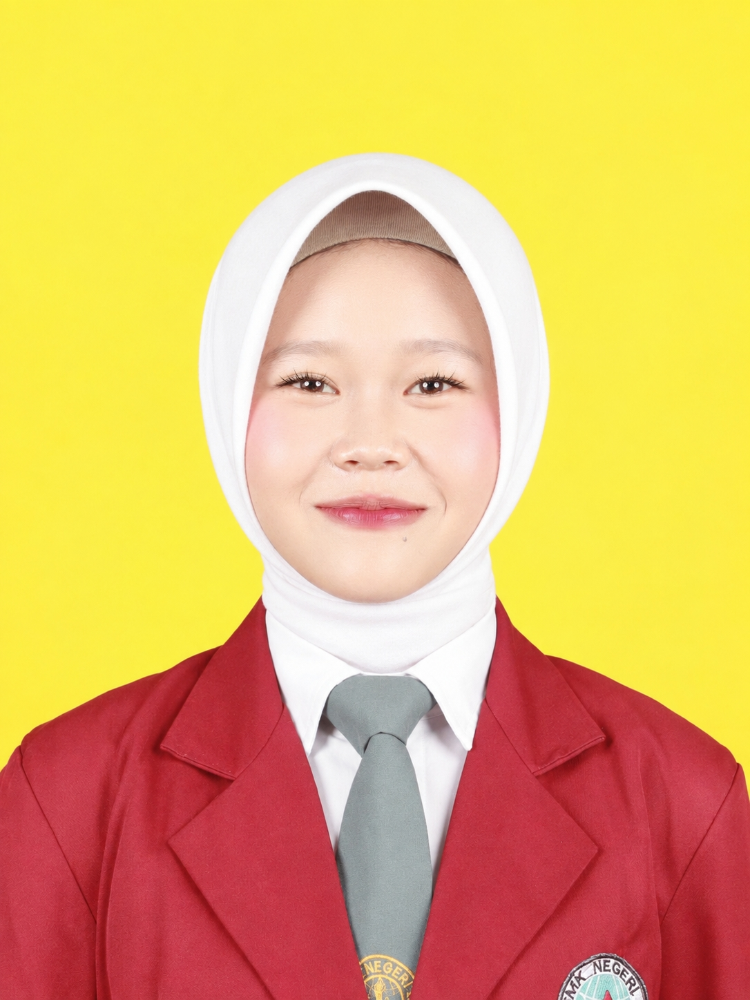

REKAYASA PERANGKAT LUNAK
Saya adalah siswi Rekayasa Perangkat Lunak yang tertarik pada pengembangan aplikasi, pemrograman web, dan pengelolaan database. Saya terus belajar dan mengembangkan kemampuan melalui berbagai proyek.

Perkenalkan, nama saya Cynthia Wandari Juliana, seorang siswi kelas XII jurusan Rekayasa Perangkat Lunak (RPL) di SMK Negeri 6 Jember. Saya memiliki ketertarikan di bidang teknologi, khususnya pengembangan website dan aplikasi. Saya terus belajar dan mengembangkan keterampilan dalam pemrograman, desain antarmuka, serta pengelolaan database. Saya adalah pribadi yang bertanggung jawab, mau belajar hal baru, dan bersemangat untuk mengembangkan kemampuan di bidang teknologi informasi.
Kumpulan proyek pembelajaran yang saya buat untuk mengembangkan kemampuan pemrograman, desain antarmuka, dan pengelolaan data.
Teknologi: PHP, MySQL, HTML, CSS.
Fitur: Login, pengelolaan produk, transaksi, dan laporan.
Teknologi: HTML, CSS, PHP/Laravel, MySQL.
Fitur: Tambah, tampil, edit, dan hapus data.
SISWI RPL | SMK NEGERI 6 JEMBER
“Belajar hari ini, untuk masa depan yang lebih baik.”
| Nama | : Cynthia Wandari Juliana |
| TTL | : Jember, 26 Juli 2009 |
| Jenis Kelamin | : Perempuan |
| Agama | : Islam |
| Kewarganegaraan | : Indonesia |
☎ 085853579974
✉ sintia9868@gmail.com
📍 Dusun Banjarejo Tengah
📸 @cccintiaaa
SMK Negeri 6 Jember
Jurusan Rekayasa Perangkat Lunak (RPL)
2024 – Sekarang
Saya adalah siswi kelas XII jurusan RPL di SMK Negeri 6 Jember yang memiliki minat besar di bidang teknologi dan pemrograman. Saya senang belajar hal baru, bekerja dalam tim, dan selalu berusaha menjadi pribadi yang lebih baik setiap harinya.
Saya ingin mengembangkan kemampuan di bidang teknologi, khususnya pengembangan aplikasi web, serta berkontribusi dalam menciptakan solusi digital yang bermanfaat di masa depan.
📞 085853579974
✉️ sintia9868@gmail.com
📸 @cccintiaaa